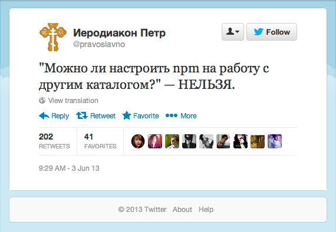

dpkg и прочие линуксыPyPIRubyGemsComposerNuGet

$ sudo npm update npm
var pmList == [ 'npm', 'volo', 'bower', 'component' ]
pmList.filter(hasGui) == [ ]
function hasGui(elem) {
return "gui" in elem;
}
.npmrc.npmignoreregisty
Can I configure npm to use a different folder?
No. This will never happen. This question comes up sometimes, because it seems silly from the outside that npm couldn't just be configured to put stuff somewhere else, and then npm could load them from there. It's an arbitrary spelling choice, right? What's the big deal?
"name": "Death Star",
"version": "1.0.0",
"description": "That's no moon...",
"dependencies": {
"Reactor core": "~0.1.0"
},
"devDependencies": {
"titanium": "*"
}
"dependencies" : {
"foo" : "1.0.0 - 2.9999.9999",
"bar" : ">=1.0.2 <2.1.2",
"baz" : ">1.0.2 <=2.3.4",
"qux" : "<1.0.0 || >=2.3.1 <2.4.5 || >=2.5.2 <3.0.0",
"asd" : "http://asdf.com/asdf.tar.gz",
"til" : "~1.2",
"elf" : "~1.2.3",
"thr" : "3.3.x"
}
#commit-ish: тег, хеш или имя ветки. По умолчанию master.
$ npm adduser
$ npm init
...
$ npm publish
$ npm unpublish <project>[@<version>]
$ npm unpublish --force <project>
volo --version 0.2.10package.json
$ npm install -g volo
./js/, ./scripts/, ./volo.{baseDir,baseUrl}
... // package.json
{
"volo": {
"baseUrl": "",
"url": "",
"dependencies": {},
"ignore": []
}
}
Semantic Versioning
X.Y.Z (Major.Minor.Patch)1.9.0 -> 1.10.0 -> 1.11.00.y.z — начальная версия0.x -> 1.x — несовместимые изменения1.0.0-alpha, 1.0.0-x.7.z.92bower --version 0.9.2
$ npm install -g bower
.bowerrc
"name": "X-wing fighter",
"version": "1.23.4",
"ignore": [],
"dependencies": {
"<name>": "<version>",
"<name>": "<folder>",
"<name>": "<package>"
},
"devDependencies": {}
{GH-user}/{repo}.zip|.tar.gz$ bower init$ git push$ bower register <name> <url>
Backbone.js + jQuery в зависимостяхUnderscore.js$ %util% uninstall underscore| Backbone.js + jQuery |
устаревший Underscore.js | удаление Underscore.js | |
|---|---|---|---|
| npm | |||
| volo | |||
| bower |